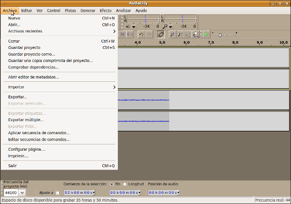
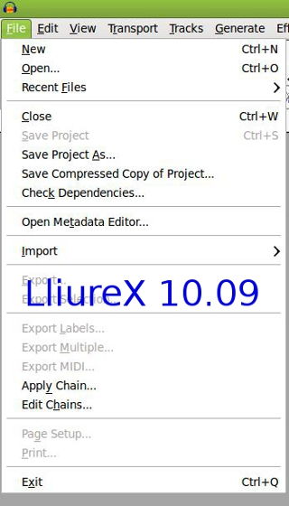
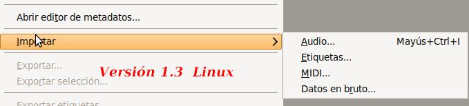

Edición de Audio y video
1.1.1. Archivo
La presentación dependerá, no sólo de la versión de nuestro programa, sino también del tema que tengamos añadido en nuestro sistema. en las imágenes posteriores observarás imágenes capturadas en diferentes distribuciones del programa (Ubuntu, LliureX, entre otras).
Las principales opciones del Menú Archivo son:
-
Nuevo: Crear un proyecto nuevo (extensión aup).
-
Abrir: Abre un proyecto Audacity con los ficheros que lo compongan. Si deseamos agregar un fichero de audio a nuestro proyecto debemos utiliar el apartado de Importar.
-
Archivos Recientes:Lista de ficheros abiertos recientemente.
-
Cerrar: cierra la ventana actual, solicitando si guardamos cambios.
-
Guardar Proyecto: Un proyecto audacity consta de un fichero aup y una carpeta que contiene los datos del fichero con nombre_data.
-
Importar: (En algunas versiones se encuentra en el Menú Proyecto).
-
- 
-
Importar Audio: Esto permite importar un fichero estándar de audio a nuestro proyecto. Puede importar varios ficheros al mismo proyecto. Al importar, cada una de ellos, se importa una pista diferente. No puede importar proyectos Audacity utilizando esta opción.
-
Importar Etiquetas: Toma de un fichero de texto códigos de tiempo y etiquetas (nombre de la canción, album, etc.) y las convierte en una pista etiquetada.
-
Importar MIDI: Importa ficheros MIDI y los coloca en una pista MIDI. No podemos con el Audacity editar, reproducir o guardarlos.
-
- Importar Datos en Bruto (raw): Este apartado le permite importar cualquier tipo de archivo de sonido. El programa lo leerá y procederá a su importación en el proyecto.
-
Exportar: en algunas versiones se divide en exportar wav, mp3, ogg, etc. Las últimas versiones, en una sóla opción, nos permiten seleccionar el tipo de fichero al que vamos a exportar la edición actual, bien todo el fichero, bien la pista seleccionada o una parte de la misma.

-
Salir: Cerrar la aplicación
Jo.R.C.A. 2004 - 2011

Edición de Audio y Video con Software Libre by José Ramón Cerdeira Alonso is licensed under a Creative Commons Reconocimiento-No comercial-Compartir bajo la misma licencia 3.0 España License